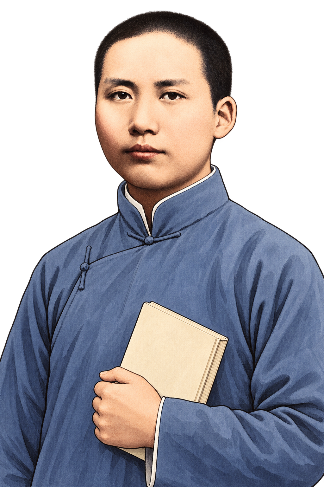

公务员·事业单位·教招·法考·考研
备考资料，一搜即达。
少一点翻找，多一点专注。搜索老师、课程或备考关键词。

世上无难事，只要肯登攀
— 毛泽东愿君此去，蟾宫折桂，雁塔题名；春风得意，一朝上岸！
全站搜索
联想词 · 分类 · 近期更新，一次找到
没有找到需要的资料？
9大板块
30+资料入口
持续更新
EXAM COUNTDOWN
上岸倒计时
今天也算在路上
今日学习签
先做一题，再谈远方。
把今天写进上岸的答案里FELLOW TRAVELERS
上岸漂流瓶
匿名写下今天完成的事、想找的资料，或送给后来人的一句话。